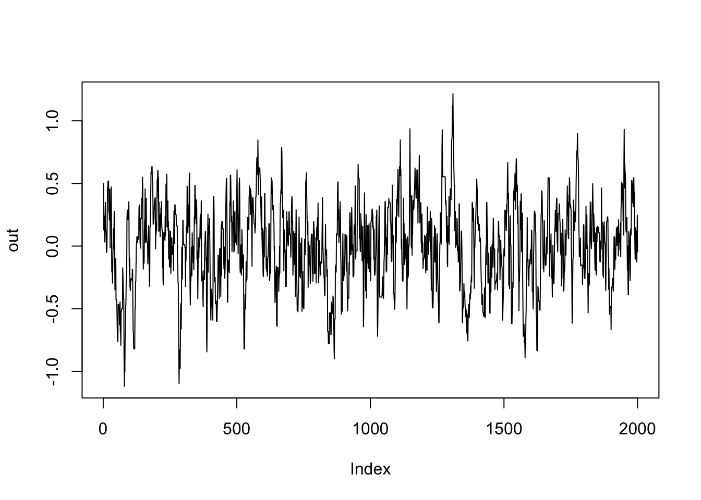
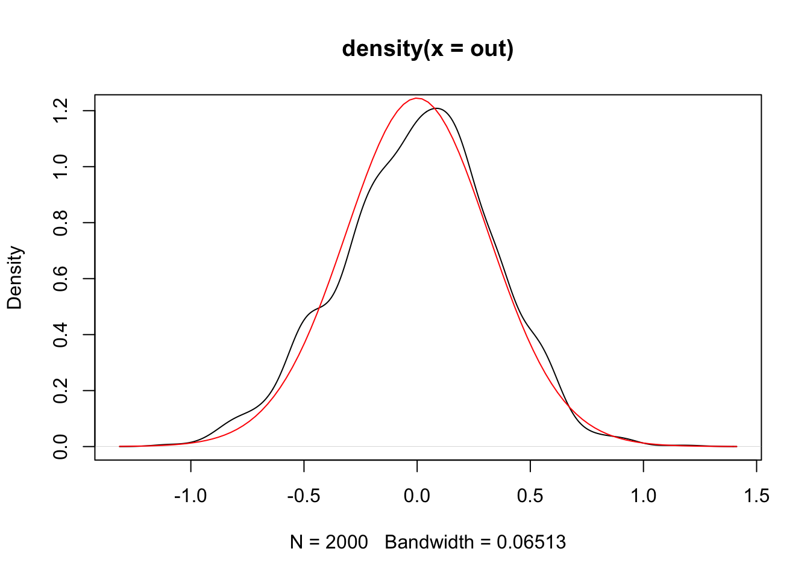

![]()
library(brms)Goal: Explore a joint teaching approach, where I teach students both how to code in R in order to solve a real interesting problem rather than super basic stuff.
We want to sample from a distribution. We know it’s density function, but imagine we don’t have a function that generates random samples. There are many ways to do it, but here we’ll illustrate MCMC methods:
We’ll also take an opportunity to see how we might optimize the code.
Metropolis Monte Carlo
Version 1: Naive implementation
Purposefully bad slow code, but works. We have our standard components:
- a pdf to evaluate (f)
- an initial value
- a proposal distribution
- a fixed number of mcmc samples to target
We iterate with a while loop and append accepted samples to a vector x until the length of the vector matches the number of samples.
mcmc_metropolis1 <- function(f, init, proposal_dist, samples) {
x <- init
while (length(x) < samples) {
x_ <- proposal_dist(1, x[length(x)])
f1 <- f(x[length(x)])
f2 <- f(x_)
if (runif(1) <= f2/f1) {
x <- c(x, x_)
} else {
x <- c(x, x[length(x)])
}
}
x
}
# TODO: check if can be done with distributional
dist_vonmises <- function(mu, kappa) {
function(x) brms::dvon_mises(x, mu = mu, kappa = kappa)
}
dist_norm <- function(sd) {
function(n, x) rnorm(n, mean = x, sd = sd)
}
out <- mcmc_metropolis1(
f = dist_vonmises(0, 10),
init = 0.5,
proposal_dist = dist_norm(sd = 0.25),
samples = 2000
)here is our mcmc trace:
plot(out, type = "l")
and the resulting distribution of samples, with the theoretical density on top:
plot(density(out))
curve(dist_vonmises(0, 10)(x), add = TRUE, col = "red")
it runs fast because this is a really simple problem, but we can optimize our function a lot. Here are a few different ways to code the same algorithm:
mcmc_metropolis2 <- function(f, init, proposal_dist, samples) {
out <- numeric(samples)
f1 <- f(init)
for (i in seq_len(samples)) {
out[i] <- init
x <- proposal_dist(1, init)
f2 <- f(x)
if (runif(1) <= f2/f1) {
init <- x
f1 <- f2
}
}
out
}
mcmc_metropolis3 <- function(f, init, proposal_dist, samples) {
next_sample <- function(current, ...) {
x_ <- proposal_dist(1, current)
f1 <- f(current)
f2 <- f(x_)
if (runif(1) <= f2/f1) x_ else current
}
Reduce(next_sample, numeric(samples-1), init = init, accumulate = TRUE)
}
mcmc_metropolis4 <- function(f, init, proposal_dist, samples) {
next_sample <- function(current, ...) {
x_ <- proposal_dist(1, current)
f1 <- f(current)
f2 <- f(x_)
if (runif(1) <= f2/f1) x_ else current
}
out <- vector("list", samples)
for (i in seq.int(samples)) {
out[[i]] <- init
init <- next_sample(init)
}
out
}There are some speed differences among those, but they are all substantially better than the original.
bench::mark(
mcmc_metropolis1(
f = function(x) exp(10 * cos(x)),
init = 0.5,
proposal_dist = dist_norm(sd = 0.25),
samples = 10000
),
mcmc_metropolis2(
f = function(x) exp(10 * cos(x)),
init = 0.5,
proposal_dist = dist_norm(sd = 0.25),
samples = 10000
),
mcmc_metropolis3(
f = function(x) exp(10 * cos(x)),
init = 0.5,
proposal_dist = dist_norm(sd = 0.25),
samples = 10000
),
mcmc_metropolis4(
f = function(x) exp(10 * cos(x)),
init = 0.5,
proposal_dist = dist_norm(sd = 0.25),
samples = 10000
),
check = FALSE
)Warning: Some expressions had a GC in every iteration; so filtering is
disabled.# A tibble: 4 × 6
expression min median `itr/sec` mem_alloc `gc/sec`
<bch:expr> <bch:t> <bch:t> <dbl> <bch:byt> <dbl>
1 mcmc_metropolis1(f = function(x)… 102.7ms 120.3ms 7.66 382MB 80.4
2 mcmc_metropolis2(f = function(x)… 12.2ms 12.8ms 76.6 122KB 7.86
3 mcmc_metropolis3(f = function(x)… 17.9ms 18.7ms 51.1 349KB 9.83
4 mcmc_metropolis4(f = function(x)… 16.1ms 16.7ms 58.7 129KB 9.79An alternative to the metropolis algorithm is rejection sampling:
rejection_sampling <- function(n, f, max_f, proposal_fun, ...) {
stopifnot(is.numeric(n), length(n) == 1, n > 0)
stopifnot(is.numeric(max_f), length(max_f) == 1 | length(max_f) == n, max_f > 0)
inner <- function(n, f, max_f, proposal_fun, ..., acc = c()) {
if (length(acc) > n) {
return(acc[seq_len(n)])
}
x <- proposal_fun(n)
y <- stats::runif(n) * max_f
accept <- y < f(x, ...)
inner(n, f, max_f, proposal_fun, ..., acc = c(acc, x[accept]))
}
inner(n, f, max_f, proposal_fun, ...)
}